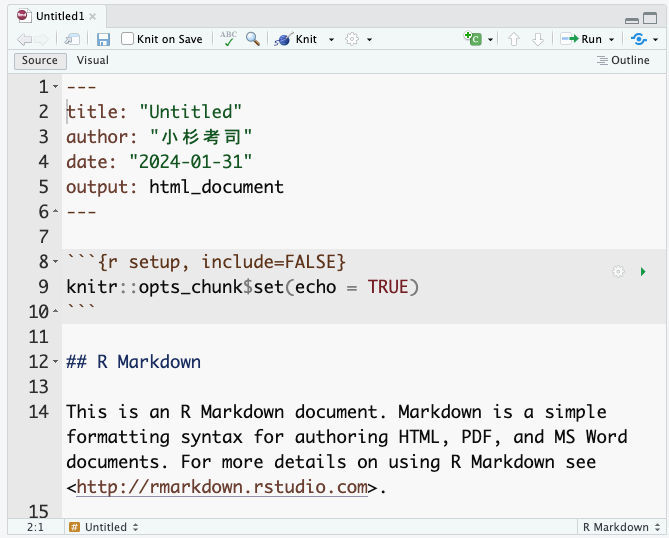

4 Rによるレポートの作成
4.1 Rmd/Quartoの使い方
4.1.1 概略
今回はRStudioを使った文書作成法について解説する。皆さんは、これまで作成と言えば、基本的にMicrosoft Wordのような文書作成ソフトを使ってきたものと思う。また，統計解析といえばR(やその他のソフト)，図表の作成はExcelといったように，用途ごとに異なるアプリケーションを活用するのが一般的であろう。
このやり方は，統計解析の数値結果を表計算ソフトに，そこで作った図表を文書作成ソフトにコピー＆ペーストする，という転記作業が何度も発生する。ここで転記ミス・貼り付け間違いが生じると，当然ながら出来上がる文書は間違ったものになる。こうした転記ミスのことを「コピペ汚染」と呼ぶこともある。
問題はこの環境をまたぐ作業にあるわけで，計算・作図・文書が一つの環境で済めばこうした問題が起こらない。これを解決するのがR markdonやQuartoという書式・ソフトウェアなのである。
Rmarkdownのmarkdownとは書式の一種である。マークアップ言語と呼ばれる書き方の一種で，なかでもRとの連携に特化したのがRmarkdownである。マークアップ言語とは，言語の中に専門の記号を埋め込み，その書式に対応した読み込みアプリで，表示の際に書式を整える方式のことを指す。有名なマークアップ言語としては，数式に特化した LaTeX や，インターネットウェブサイトで用いられている HTML などがある。
Rmarkdownはmarkdownの書式を踏襲しつつ，Rでの実行結果を文中に埋め込むコマンドを有している。Rのコマンドで計算したり図表を作成しつつ，その結果を埋め込む場所をマークアップ言語で指定する。最終的に文書を閲覧する場合は，マークアップ言語を出力ファイルに変換する(コンパイルする，ニットするという)必要があり，その時Rでの計算が実行される。コンパイルのたびに計算されるので，同じコードでも乱数を使ったコードを書いていたり，一部読み込みファイルを変更するだけで，出力される結果は変わる。しかしコピペ汚染のように，間違った値・図表が含まれるものではないので，研究の再現性にも一役買うことになる。再現可能な文書の作成について、詳しくは@Takahashi201805 を参考にすると良い。
QuartoはRmarkdownをさらに拡張させたもので，RStudioを提供しているPosit社が今もっとも注力しているソフトのひとつである。RmarkdownはRとmarkdownの連携であったが，QuartoはRだけでなく，PythonやJuliaといった他の言語にも対応しているし，これら複数の計算言語の混在も許す。すなわち，一部はRで計算し，その結果をPythonで検算してJuliaで描画する，といったことを一枚のファイルで書き込むことも可能である。
なおこの授業資料もQuartoで作成している。このようにQuartoはプレゼンテーション資料やウェブサイトも作成できるし，出力形式もウェブサイトだけでなくPDFやePUB(電子書籍の形式)にすることが可能である。なおこの授業の資料もウェブサイトと同時にPDF形式と，ePUB形式で出力されている。Quartoについて専門の解説書はまだないが，インターネットに充実したドキュメントがあるので検索するといいだろう。まだ新しい技術なので，公式を第一に参照すると良い。
4.1.2 ファイルの作成とknit
RmarkdownはRStudioとの相性がよく，RStudioのFile > New FileからR Markdownを選ぶとRmarkdownファイルがサンプルとともに作成される。作成時に文書のタイトル，著者名，作成日時や出力フォーマットが指定できるサブウィンドゥが開き，作成するとサンプルコードが含まれたR markdownファイルが表示されるだろう。
Quartoも同様に，RStudioのFile > New FileからQuarto Documentを選ぶことで新しいファイル画面が開く。なおRmarkdownファイルの拡張子はRmdとすることが一般的であり，QuartoはQmdとすることが一般的である。もっとも，QuartoはRStudio以外のエディタから利用することも考えられていて，例えばVS Codeなどの一般的なエディタで作成し，コマンドライン経由でコンパイルすることも可能である。


Rmarkdown，Quartoともに，ファイルの冒頭に4つのハイフンで囲まれた領域が見て取れるだろう。これはYAMLヘッダ(YAMLはYet Another Markup Languageの略。ここはまだマークアップ領域じゃないよということ)と呼ばれる，文書全体に対する設定をする領域のことである。
この領域を一瞥すると，タイトルや著者名，出力形式などが記載されていることが見て取れる。YAMLヘッダはインデントに敏感で，また正しくない記述が含まれているとエラーになって出力ファイルが作られないことが少なくないため，ここを手動で書き換えるときは注意が必要である。とはいえ，ここを自在に書き換えることができるようになると，様々な応用が効くので興味があるものは調べて色々トライしてもらいたい。
さて，Rmd/Qmdのファイル上部にKnitあるいはRenderと書かれたボタンがあるだろう。これをクリックすると，表示用ファイルへの変換が実行される。1 Rmarkdownの場合は，すでにサンプルコードが含まれているので，数値および図表のはいったHTMLドキュメントが表示されるだろう。以下はこのサンプルコードを例に説明するため，Rmarkdownとそのコンパイル(knit))を一度試してもらいたい。その上で，元のRmdファイルと出来上がったファイルとの対応関係を確認してみよう。

おおよそ，何がどのように変換されているかの対応が推察できるだろう。 出力ファイルの冒頭には，YAMLで設定したタイトル，著者名，日付などが表示されているし，#の印がついていた一行は見出しとして強調されている。
特に注目したいのが，元のファイルで3つのクォーテーションで囲まれた灰色の領域である。この領域のことを特にチャンクといい，ここに書かれたRスクリプトが変換時に実行され，結果として出力される。出力ファイルをみると，summary(cars) というチャンクで指定された命令文があり，その結果(carsというデータセットの要約)が出力されているのが見て取れる。繰り返しになるが，ポイントは原稿ファイルには計算を指示するスクリプトが書かれているだけで，出力結果を書いていないことにある。原稿は指示だけなのである。こうすることで，コピー＆ペーストのミスがなくなるし，同じRmd/Qmd原稿とデータを持っていれば，ことなるPC上でも同じ出力が得られる。環境を統合することで，ミスの防止と再現可能性に貢献しているのがわかるだろう。
今回はcarsというRがデフォルトでもっているサンプルデータの例なので，どの環境でも同じ結果が出力されている。しかしもちろん，個別のデータファイルであっても，同じファイルで同じ読み込み方，同じ加工をしていれば，環境が違っても追跡可能である。注意して欲しいのは，コンパイルするときは新しい環境から行われるという点ある。すなわち，原稿ファイルにないオブジェクトの利用はできないのである。これは再現性を担保するという意味では当然のことで，「事前に別途処理しておいたデータ」から分析を始められても，その事前処理が適切だったかどうかがチェックできないからである。Rmd/Qmdファイルと，CSVファイルなどの素データが共有されていれば再現できる，という利点を活かすため，データハンドリングを含めた前処理も全てチャンクに書き込み，新しい環境で最初からトレースできるようにする必要がある。不便に感じるところもあるかもしれないが，科学的営みとして重要な手続きであることを理解してもらいたい。2
RStudiでは，ビジュアルモードやアウトライン表示，チャンク挿入ボタンやチャンクごとの実行・設定などRmd/Qmdファイルの編集に便利な機能も複数用意されているので，高橋 (2018) などを参考にいろいろ試してみるといいだろう。
4.1.3 マークダウンの記法
以下では，マークダウン記法について基本的な利用法を解説する。
4.1.3.1 見出しと強調
すでに見たように，マークダウンでは#記号で見出しを作ることができる。#の数が見出しレベルに対応し，#はトップレベル，本でいうところの「章,chapter」，HTMLでいうところのH1に相当する。#記号の後ろに半角スペースが必要なことに注意されたし。以下，##で「節,section」あるいはH2，###で小節(subsection,H3)，####で小小節(subsubsection,H4)…と続く。
心理学を始め，科学論文の書き方としての「パラグラフライティング」を既にみしっていることだろう。文章をセクション，サブセクション，パラグラフ，センテンスのように階層的に分割し，それぞれの区分が4つの下位区分を含むような文章構造である。心理学の場合は特に「問題，方法，結果，考察」の4セクションで一論文が構成されるのが基本である。こうしたアウトラインを意識した書き方は読み手にも優しく，マークダウンの記法ではそれが自然と実装できるようになっている。
これとは別に，一部を太字や斜体で強調したいこともあるだろう。そのような場合はアスタリスクを1つ，あるいは2つつけて強調したり強調したりできる。
4.1.3.2 図表とリンク
文中に図表を挿入したいこともあるだろう。表の挿入は，マークダウン独自の記法があり，縦棒|やハイフン-を駆使して以下のように表記する。
| Header 1 | Header 2 | Header 3 |
| -------- | -------- | -------- |
| Row 1 | Data 1 | Data 2 |
| Row 2 | Data 3 | Data 4 |Rのコードの中には分析結果をマークダウン形式で出力してくれる関数もあるし，表計算ソフトなどでできた表があるなら，chatGPTなど生成AIを利用するとすぐに書式変換してくれるので，そういったツールを活用すると良い。
図の挿入は，マークダウンでは図のファイルへのリンクと考えると良い。次のように，大括弧で括った文字がキャプション，つづく小括弧で括ったものが図へのリンクとなる。実際に表示されるときは図が示される。
同様に，ウェブサイトへのリンクなども，[表示名](リンク先)の書式で対応できる。
4.1.3.3 リスト
並列的に箇条書きを示したい場合は，プラスあるいはマイナスでリストアップする。注意すべきは，リストの前後に改行を入れておくべきことである。
ここまで前の文
+ list item 1
+ list item 2
+ list item 3
- sub item 1
- sub item 2
ここから次の文4.1.3.4 チャンク
既に述べたように，チャンク(chunk)と呼ばれる領域は実行されるコードを記載するところである。チャンクはまず，バックスラッシュ3つ繋げることでコードブロックであることを示し，次に rと書くことで計算エンジンがRであることを明示する。ここにJuiliaやPythonなど他の計算エンジンを指定することも可能である。
可能であれば，チャンク名をつけておくと良い。次の例は，チャンク名として「chunksample」を与えたものである。チャンク名をつけておくと，RStudioでは見出しジャンプをつかって移動することもできるので，編集時に便利である。
```{r chunksample,echo = FALSE}
summary(cars)
```
さらに，echo = FALSEのようにチャンクオプションを指定することができる。echo=FALSEは入力したスクリプトを表示せず，結果だけにするオプションである。そのほか「計算結果を含めない」「表示せずに計算は実行する」等様々な指定が可能である。
なおQuartoではこのチャンクオプションを次のように書くこともできる。
```{r}
#| echo: FALSE
#| include: FALSE
summary(cars)
```
4.2 プロットによる基本的な描画
4.3 ggplotによる描画
4.4 各種geomの練習
4.5 ggplotオブジェクトを並べる
4.6 テーマの変更（レポートに合わせる）
4.7 References